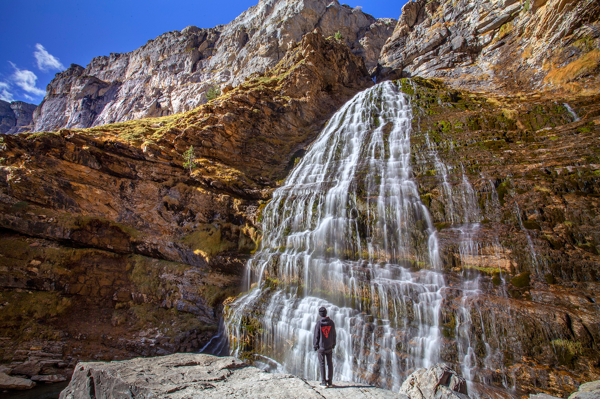

Ruta a la Cola de Caballo - Ordesa
Una de las rutas más conocidas del Pirineo aragonés, con cascadas, bosques y paisajes espectaculares durante todo el recorrido.

Información de la ruta
- Ubicación: Parque Nacional de Ordesa y Monte Perdido
- Inicio: Pradera de Ordesa
- Distancia: 17-18 km aproximadamente (ida y vuelta)
- Duración: Entre 5 y 7 horas
- Dificultad: Moderada
- Tipo: Ida y vuelta
Descripción del recorrido
La ruta comienza en la Pradera de Ordesa, uno de los puntos de partida más conocidos para recorrer el valle. Desde allí seguimos un sendero bien señalizado que se adentra en un bosque de hayas y abetos.
Durante la primera parte del recorrido encontramos varias cascadas, como la de Arripas y la del Estrecho. Son algunos de los lugares más bonitos de la excursión y merece la pena detenerse para disfrutar del paisaje.
Más adelante llegamos a las Gradas de Soaso, donde el río Arazas forma una serie de pequeñas cascadas escalonadas. Desde aquí continuamos hacia el circo de Soaso, rodeado de grandes paredes de montaña.
Al final del valle encontramos la famosa cascada de la Cola de Caballo. Es un lugar perfecto para descansar, comer algo y disfrutar del entorno antes de comenzar el camino de regreso.
Consejos para la excursión
Aunque el sendero no presenta grandes dificultades técnicas en condiciones normales, es una ruta bastante larga. Por eso conviene llevar calzado adecuado, agua suficiente, comida y algo de abrigo.
También es importante consultar el tiempo antes de salir y comprobar las condiciones del recorrido. En determinadas épocas del año puede haber nieve o hielo, lo que aumenta considerablemente la dificultad.
Durante los periodos de mayor afluencia, el acceso a la Pradera de Ordesa puede estar regulado mediante autobuses desde Torla, por lo que conviene informarse antes de organizar la visita.
← Volver a las rutas